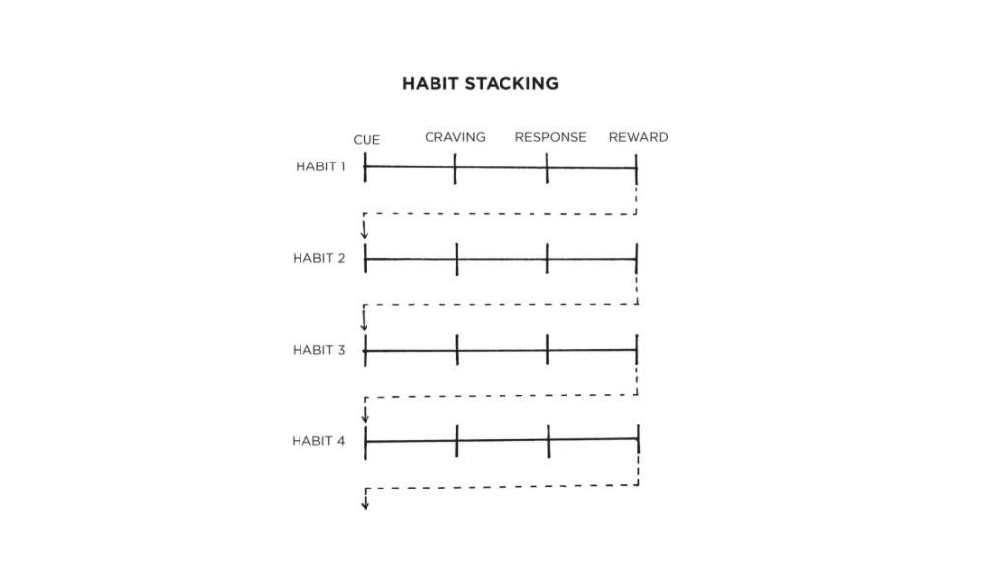

The simple way to build new habits is to fill out this sentence:
I will [BEHAVIOR] at [TIME] in [LOCATION].
If you aren’t sure when to start your habit, try the first day of the week, month, or year. People are more likely to take action at those times because hope is usually higher. If we have hope, we have a reason to take action. A fresh start feels motivating.
Being specific about what you want and how you will achieve it helps you say no to things that derail progress, distract your attention, and pull you off course.
Give your habits a time and a space to live in the world. The goal is to make the time and location so obvious that, with enough repetition, you get an urge to do the right thing at the right time, even if you can’t say why.
For Weekly Wisdom in your Inbox
Habit Stacking: A Simple Plan To Overhaul Your Habits
When it comes to building new habits, you can use the connectedness of behaviour to your advantage. One of the best ways to build a new habit is to identify a current habit you already do each day and then stack your new behaviour on top. This is called habit stacking.
Rather than pairing your new habit with a particular time and location, you pair it with a current habit. This method, which was created by BJ Fogg as part of his Tiny Habits program, can be used to design an obvious cue for nearly any habit.
The habit stacking formula is:
“After [CURRENT HABIT], I will [NEW HABIT].”
For example:
- Meditation: After I pour my cup of coffee each morning, I will meditate for one minute.
- Gratitude. After I sit down to dinner, I will say one thing I’m grateful for that happened today.
The key is to tie your desired behaviour into something you already do each day. Once you have mastered this basic structure, you can begin to create larger stacks by chaining small habits together. This allows you to take advantage of the natural momentum that comes from one behaviour leading into the next.

Habit stacking is one of the most practical ways to create obvious cues for your habits and design a clear plan for when and where to take action.
Source: Atomic Habits by
James Clear

For Weekly Wisdom in your Inbox